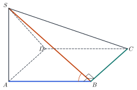
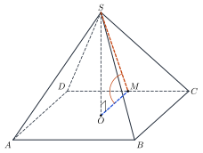
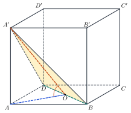

Perpendicular PlanesHai mặt phẳng vuông góc
Grade 11 · Topic: Perpendicularity in SpaceLớp 11 · Chủ đề: Quan hệ vuông góc trong không gian
1Lesson IntroductionGiới thiệu bài học
Learning goalsMục tiêu bài học
By the end of this lesson you can:
Sau bài học này, em có thể:
define and compute the angle between two planes and the dihedral angle;
nêu định nghĩa và tính góc giữa hai mặt phẳng (không gian), góc nhị diện;
prove that two planes are perpendicular;
chứng minh hai mặt phẳng vuông góc;
recognise right prisms, boxes, cubes, regular pyramids and regular frustums;
nhận biết hình lăng trụ đứng, lăng trụ đều, hình hộp chữ nhật, hình lập phương, hình chóp đều, hình chóp cụt đều;
compute roof pitches and lateral faces of real pyramids.
tính độ dốc mái nhà và mặt bên của các khối chóp thực tế.
2Mathematical VocabularyTừ vựng Toán học
angle between two planes – the angle between two lines perpendicular to the two planes; equivalently, for intersecting planes, between two lines in them perpendicular to the common line at one point.
góc giữa hai mặt phẳng (không gian) – góc giữa hai đường thẳng lần lượt vuông góc với hai mặt phẳng; với hai mặt phẳng cắt nhau, đó là góc giữa hai đường thẳng nằm trong hai mặt và cùng vuông góc với giao tuyến tại một điểm.
dihedral angle – the figure formed by two half-planes with a common edge; it is measured by a plane angle perpendicular to the edge.
góc nhị diện – hình tạo bởi hai nửa mặt phẳng có chung bờ; số đo của nó là số đo một góc phẳng nhị diện (vuông góc với cạnh).
perpendicular planes – two planes whose angle is \(90^\circ\); this holds when one contains a line perpendicular to the other.
hai mặt phẳng vuông góc – hai mặt phẳng tạo với nhau góc \(90^\circ\); điều đó xảy ra khi mặt này chứa một đường thẳng vuông góc với mặt kia.
regular pyramid – a pyramid whose base is a regular polygon and whose apex projects onto the centre of the base.
hình chóp đều – hình chóp có đáy là đa giác đều và hình chiếu của đỉnh trên đáy là tâm của đáy.
3Useful English PhrasesCụm từ tiếng Anh thường gặp
The two planes meet along the line \(BC\).
Hai mặt phẳng cắt nhau theo giao tuyến \(BC\).
Both lines are perpendicular to the common line.
Cả hai đường thẳng đều vuông góc với giao tuyến.
The plane contains a line perpendicular to the base.
Mặt phẳng chứa một đường thẳng vuông góc với đáy.
The lateral faces make sixty degrees with the base.
Các mặt bên tạo với đáy góc 60°.
The roof is pitched at about thirty-seven degrees.
Mái nhà dốc khoảng 37°.
4Prerequisite ReviewÔn tập kiến thức nền
From Bài 23–24: \(d\perp(P)\) via two intersecting lines; the angle between a line and a plane uses the projection. Grade 9: tangent ratio in a right triangle.
Từ Bài 23–24: chứng minh \(d\perp(P)\) qua hai đường thẳng cắt nhau; góc giữa đường thẳng và mặt phẳng dùng hình chiếu. Lớp 9: tỉ số tan trong tam giác vuông.
5TheoryLý thuyết
5.1 Angle between two planes; dihedral anglesGóc giữa hai mặt phẳng; góc nhị diện
Definition and methodĐịnh nghĩa và cách xác định
The angle between \((P)\) and \((Q)\) is the angle between two lines \(a\perp(P)\), \(b\perp(Q)\). It lies in \([0^\circ;90^\circ]\); parallel or equal planes make \(0^\circ\).
Góc giữa \((P)\) và \((Q)\) là góc giữa hai đường thẳng \(a\perp(P)\), \(b\perp(Q)\). Góc này thuộc \([0^\circ;90^\circ]\); hai mặt song song hoặc trùng nhau tạo góc \(0^\circ\).
Practical method for \((P)\cap(Q)=c\): at a point \(I\in c\) draw \(a\subset(P)\), \(b\subset(Q)\), both perpendicular to \(c\); then \(((P),(Q))=(a,b)\).
Cách xác định khi \((P)\cap(Q)=c\): tại \(I\in c\), dựng \(a\subset(P)\), \(b\subset(Q)\) cùng vuông góc với \(c\); khi đó \(((P),(Q))=(a,b)\).
A dihedral angle \([P,c,Q]\) is formed by two half-planes with edge \(c\); its plane angle is built the same way, but can be obtuse (from \(0^\circ\) to \(180^\circ\)).
Góc nhị diện \([P,c,Q]\) tạo bởi hai nửa mặt phẳng có chung bờ \(c\); góc phẳng nhị diện dựng tương tự nhưng có thể tù (từ \(0^\circ\) đến \(180^\circ\)).

5.2 Perpendicular planesHai mặt phẳng vuông góc
Criterion and propertiesĐiều kiện và tính chất
If \((P)\) contains a line \(a\perp(Q)\) then \((P)\perp(Q)\).
Nếu \((P)\) chứa một đường thẳng \(a\perp(Q)\) thì \((P)\perp(Q)\).
If \((P)\perp(Q)\), every line of \((P)\) perpendicular to the common line is perpendicular to \((Q)\).
Nếu \((P)\perp(Q)\) thì mọi đường thẳng nằm trong \((P)\) và vuông góc với giao tuyến đều vuông góc với \((Q)\).
Two intersecting planes both perpendicular to \((R)\) meet along a line perpendicular to \((R)\).
Hai mặt phẳng cắt nhau cùng vuông góc với \((R)\) thì giao tuyến của chúng vuông góc với \((R)\).
5.3 Special prisms and pyramidsMột số hình lăng trụ, hình chóp đặc biệt
DefinitionsĐịnh nghĩa
Right prism: lateral edges perpendicular to the bases (lateral faces are rectangles); regular prism: right prism with regular-polygon bases; right box: right prism with parallelogram bases; rectangular box: right box with rectangle bases; cube: all faces squares.
Lăng trụ đứng: cạnh bên vuông góc với đáy (mặt bên là hình chữ nhật); lăng trụ đều: lăng trụ đứng có đáy là đa giác đều; hình hộp đứng: lăng trụ đứng có đáy là hình bình hành; hình hộp chữ nhật: hình hộp đứng có đáy là hình chữ nhật; hình lập phương: mọi mặt là hình vuông.
Regular pyramid: regular base, apex projecting to the centre \(O\); lateral edges equal, lateral faces congruent isosceles triangles, all make the same angle with the base. A plane parallel to the base cuts off a regular frustum.
Hình chóp đều: đáy là đa giác đều, hình chiếu của đỉnh là tâm \(O\) của đáy; các cạnh bên bằng nhau, các mặt bên là các tam giác cân bằng nhau và tạo với đáy các góc bằng nhau. Mặt phẳng song song với đáy cắt ra hình chóp cụt đều.

6Worked ExamplesVí dụ có lời giải
ExampleVí dụ 1BasicCơ bản – Proving perpendicular planesChứng minh hai mặt phẳng vuông góc
\(S.ABCD\): square base, \(SA\perp(ABCD)\). Prove \((SAB)\perp(ABCD)\), \((SAB)\perp(SBC)\) and \((SAC)\perp(SBD)\).
Hình chóp \(S.ABCD\) có đáy là hình vuông, \(SA\perp(ABCD)\). Chứng minh \((SAB)\perp(ABCD)\), \((SAB)\perp(SBC)\) và \((SAC)\perp(SBD)\).
Analysis: Find in one plane a line perpendicular to the other.
Phân tích: Tìm trong một mặt phẳng một đường thẳng vuông góc với mặt kia.
\(SA\subset(SAB)\), \(SA\perp(ABCD)\): \((SAB)\perp(ABCD)\).
\(SA\subset(SAB)\), \(SA\perp(ABCD)\): \((SAB)\perp(ABCD)\).
\(BC\perp(SAB)\) (Bài 23), \(BC\subset(SBC)\): \((SBC)\perp(SAB)\).
\(BC\perp(SAB)\) (Bài 23), \(BC\subset(SBC)\): \((SBC)\perp(SAB)\).
\(BD\perp(SAC)\), \(BD\subset(SBD)\): \((SBD)\perp(SAC)\).
\(BD\perp(SAC)\), \(BD\subset(SBD)\): \((SBD)\perp(SAC)\).
All three pairs are perpendicular.
Cả ba cặp mặt phẳng đều vuông góc.
ExampleVí dụ 2BasicCơ bản – Angle between a face and the baseGóc giữa mặt bên và đáy
\(S.ABCD\): square base of side \(a\), \(SA\perp(ABCD)\), \(SA=a\sqrt3\). Find the angle between \((SBC)\) and \((ABCD)\).
Hình chóp \(S.ABCD\) có đáy là hình vuông cạnh \(a\), \(SA\perp(ABCD)\), \(SA=a\sqrt3\). Tính góc giữa \((SBC)\) và \((ABCD)\).
Analysis: Common line \(BC\); \(AB\perp BC\), \(SB\perp BC\).
Phân tích: Giao tuyến \(BC\); \(AB\perp BC\), \(SB\perp BC\).
The angle is \(\widehat{SBA}\): \(\tan\widehat{SBA}=\dfrac{a\sqrt3}{a}=\sqrt3\).
Góc cần tìm là \(\widehat{SBA}\): \(\tan\widehat{SBA}=\dfrac{a\sqrt3}{a}=\sqrt3\).
\(60^\circ\).
\(60^\circ\).
ExampleVí dụ 3IntermediateTrung bình – A regular pyramidHình chóp đều
Regular pyramid \(S.ABCD\) with base side \(a\) and height \(SO=\dfrac{a\sqrt3}2\). Find the angle between a lateral face and the base, and the slant height \(SM\).
Hình chóp tứ giác đều \(S.ABCD\) có cạnh đáy \(a\), chiều cao \(SO=\dfrac{a\sqrt3}2\). Tính góc giữa mặt bên và mặt đáy và trung đoạn \(SM\).
Analysis: \(M\) the midpoint of \(CD\), \(OM=\dfrac a2\).
Phân tích: \(M\) là trung điểm \(CD\), \(OM=\dfrac a2\).
\(\tan\widehat{SMO}=\dfrac{\dfrac{a\sqrt3}{2}}{\dfrac{a}{2}}=\sqrt3\Rightarrow60^\circ\).
\(\tan\widehat{SMO}=\dfrac{\dfrac{a\sqrt3}{2}}{\dfrac{a}{2}}=\sqrt3\Rightarrow60^\circ\).
\(SM=\sqrt{SO^2+OM^2}=\sqrt{\dfrac{3a^2}4+\dfrac{a^2}4}=a\).
\(SM=\sqrt{SO^2+OM^2}=\sqrt{\dfrac{3a^2}4+\dfrac{a^2}4}=a\).
\(60^\circ\); \(SM=a\).
\(60^\circ\); \(SM=a\).
ExampleVí dụ 4IntermediateTrung bình – A plane through a cubeMặt phẳng cắt hình lập phương
Cube \(ABCD.A'B'C'D'\) with edge \(a\). Find the angle between \((A'BD)\) and \((ABCD)\).
Hình lập phương \(ABCD.A'B'C'D'\) cạnh \(a\). Tính góc giữa \((A'BD)\) và \((ABCD)\).

Analysis: Common line \(BD\); \(O\) the centre of \(ABCD\).
Phân tích: Giao tuyến \(BD\); \(O\) là tâm hình vuông \(ABCD\).
\(AO\perp BD\), \(A'O\perp BD\) (\(BD\perp(AA'O)\)): the angle is \(\widehat{A'OA}\).
\(AO\perp BD\), \(A'O\perp BD\) (vì \(BD\perp(AA'O)\)): góc cần tìm là \(\widehat{A'OA}\).
\(\tan\widehat{A'OA}=\dfrac{a}{\dfrac{a\sqrt2}{2}}=\sqrt2\).
\(\tan\widehat{A'OA}=\dfrac{a}{\dfrac{a\sqrt2}{2}}=\sqrt2\).
\(\tan\varphi=\sqrt2\), \(\varphi\approx54{,}74^\circ\).
\(\tan\varphi=\sqrt2\), \(\varphi\approx54{,}74^\circ\).
ExampleVí dụ 5AdvancedNâng cao – Roof pitch and roof areaĐộ dốc và diện tích mái
A house is 8 m wide and 10 m long. Its gable roof rises 3 m from the eaves to the ridge. Find the angle between each roof plane and the ceiling, and the area of roofing sheets needed.
Một ngôi nhà rộng 8 m, dài 10 m, mái hai mái có nóc cao hơn mép mái 3 m. Tính góc giữa mỗi mặt mái và mặt trần, và diện tích tôn lợp cần dùng.
Analysis: Cut perpendicular to the ridge: a right triangle with legs 4 m and 3 m.
Phân tích: Cắt vuông góc với nóc: tam giác vuông có hai cạnh góc vuông 4 m và 3 m.
Roof slope length \(=\sqrt{4^2+3^2}=5\) m; \(\cos\varphi=\dfrac45\Rightarrow\varphi\approx36{,}87^\circ\).
Chiều dài dốc mái \(=\sqrt{4^2+3^2}=5\) m; \(\cos\varphi=\dfrac45\Rightarrow\varphi\approx36{,}87^\circ\).
Area \(=2\cdot5\cdot10=100\) m². Check: its projection on the ceiling is \(8\cdot10=80=100\cos\varphi\) m².
Diện tích \(=2\cdot5\cdot10=100\) m². Kiểm tra: hình chiếu trên trần có diện tích \(8\cdot10=80=100\cos\varphi\) m².
About \(36{,}87^\circ\); 100 m² of sheets.
Khoảng \(36{,}87^\circ\); 100 m² tôn.
7PracticeBài tập luyện tập
A. Multiple ChoiceA. Trắc nghiệm nhiều lựa chọn
\(S.ABCD\): square base of side 3, \(SA\perp(ABCD)\), \(SA=3\sqrt3\). The angle between \((SBC)\) and \((ABCD)\) is…
Hình chóp \(S.ABCD\) có đáy là hình vuông cạnh 3, \(SA\perp(ABCD)\), \(SA=3\sqrt3\). Góc giữa \((SBC)\) và \((ABCD)\) bằng…
Answer: d. The angle is \(\widehat{SBA}\).
Đáp án d. Góc cần tìm là \(\widehat{SBA}\), \(\tan\widehat{SBA}=\dfrac{SA}{AB}\).
Regular pyramid \(S.ABCD\): base side 4, height \(2\). The angle between a lateral face and the base is…
Hình chóp tứ giác đều \(S.ABCD\) có cạnh đáy 4, chiều cao \(2\). Góc giữa mặt bên và mặt đáy bằng…
Answer: c. \(\tan\widehat{SMO}=\dfrac{SO}{OM}\), \(OM=2\).
Đáp án c. \(\tan\widehat{SMO}=\dfrac{SO}{OM}\) với \(OM=2\).
\(S.ABCD\): square base, \(SA\perp(ABCD)\). Which plane is perpendicular to \((ABCD)\)?
Hình chóp \(S.ABCD\) có đáy hình vuông, \(SA\perp(ABCD)\). Mặt phẳng nào vuông góc với \((ABCD)\)?
Answer: c. It contains a line perpendicular to \((ABCD)\).
Đáp án c. Mặt phẳng đó chứa một đường thẳng vuông góc với \((ABCD)\).
B. True or FalseB. Đúng hoặc sai
If \((P)\) contains a line perpendicular to \((Q)\), then \((P)\perp(Q)\).
Nếu \((P)\) chứa một đường thẳng vuông góc với \((Q)\) thì \((P)\perp(Q)\).
Recall the criterion.
Nhớ lại điều kiện hai mặt phẳng vuông góc.
The lateral faces of a right prism are rectangles.
Các mặt bên của hình lăng trụ đứng là hình chữ nhật.
Recall the definitions.
Nhớ lại định nghĩa các hình đặc biệt.
C. Short AnswerC. Trả lời ngắn
Regular pyramid \(S.ABCD\): base side 8, height 3. Find the slant height \(SM\).
Hình chóp tứ giác đều \(S.ABCD\) có cạnh đáy 8, chiều cao 3. Tính trung đoạn \(SM\).
Enter a number.
Nhập một số.
\(SM=\sqrt{SO^2+OM^2}\).
\(SM=\sqrt{9+16}=5\).
A house 8 m wide and 12 m long has a gable roof whose ridge is 3 m above the eaves. How many square metres of roofing are needed?
Ngôi nhà rộng 8 m, dài 12 m, mái hai mái có nóc cao hơn mép mái 3 m. Cần bao nhiêu mét vuông tôn lợp?
Enter a number.
Nhập một số.
Slope length \(\sqrt{4^2+3^2}=5\).
Dốc mái dài \(\sqrt{4^2+3^2}=5\) m; diện tích \(2\cdot5\cdot12=120\) m².
A. Multiple ChoiceA. Trắc nghiệm nhiều lựa chọn
\(S.ABCD\): square base of side 4, \(SA\perp(ABCD)\), \(SA=4\). The angle between \((SBC)\) and \((ABCD)\) is…
Hình chóp \(S.ABCD\) có đáy là hình vuông cạnh 4, \(SA\perp(ABCD)\), \(SA=4\). Góc giữa \((SBC)\) và \((ABCD)\) bằng…
Answer: d. The angle is \(\widehat{SBA}\).
Đáp án d. Góc cần tìm là \(\widehat{SBA}\), \(\tan\widehat{SBA}=\dfrac{SA}{AB}\).
Regular pyramid \(S.ABCD\): base side 6, height \(3\sqrt3\). The angle between a lateral face and the base is…
Hình chóp tứ giác đều \(S.ABCD\) có cạnh đáy 6, chiều cao \(3\sqrt3\). Góc giữa mặt bên và mặt đáy bằng…
Answer: c. \(\tan\widehat{SMO}=\dfrac{SO}{OM}\), \(OM=3\).
Đáp án c. \(\tan\widehat{SMO}=\dfrac{SO}{OM}\) với \(OM=3\).
\(S.ABCD\): square base, \(SA\perp(ABCD)\). Which plane is perpendicular to \((SBD)\)?
Hình chóp \(S.ABCD\) có đáy hình vuông, \(SA\perp(ABCD)\). Mặt phẳng nào vuông góc với \((SBD)\)?
Answer: c. It contains a line perpendicular to \((SBD)\).
Đáp án c. Mặt phẳng đó chứa một đường thẳng vuông góc với \((SBD)\).
B. True or FalseB. Đúng hoặc sai
If \((P)\perp(Q)\), every line of \((P)\) is perpendicular to \((Q)\).
Nếu \((P)\perp(Q)\) thì mọi đường thẳng nằm trong \((P)\) đều vuông góc với \((Q)\).
Recall the criterion.
Nhớ lại điều kiện hai mặt phẳng vuông góc.
The bases of a right box are always rectangles.
Hai đáy của hình hộp đứng luôn là hình chữ nhật.
Recall the definitions.
Nhớ lại định nghĩa các hình đặc biệt.
C. Short AnswerC. Trả lời ngắn
Regular pyramid \(S.ABCD\): base side 10, height 12. Find the slant height \(SM\).
Hình chóp tứ giác đều \(S.ABCD\) có cạnh đáy 10, chiều cao 12. Tính trung đoạn \(SM\).
Enter a number.
Nhập một số.
\(SM=\sqrt{SO^2+OM^2}\).
\(SM=\sqrt{144+25}=13\).
A house 12 m wide and 15 m long has a gable roof whose ridge is 8 m above the eaves. How many square metres of roofing are needed?
Ngôi nhà rộng 12 m, dài 15 m, mái hai mái có nóc cao hơn mép mái 8 m. Cần bao nhiêu mét vuông tôn lợp?
Enter a number.
Nhập một số.
Slope length \(\sqrt{6^2+8^2}=10\).
Dốc mái dài \(\sqrt{6^2+8^2}=10\) m; diện tích \(2\cdot10\cdot15=300\) m².
A. Multiple ChoiceA. Trắc nghiệm nhiều lựa chọn
\(S.ABCD\): square base of side 6, \(SA\perp(ABCD)\), \(SA=2\sqrt3\). The angle between \((SBC)\) and \((ABCD)\) is…
Hình chóp \(S.ABCD\) có đáy là hình vuông cạnh 6, \(SA\perp(ABCD)\), \(SA=2\sqrt3\). Góc giữa \((SBC)\) và \((ABCD)\) bằng…
Answer: d. The angle is \(\widehat{SBA}\).
Đáp án d. Góc cần tìm là \(\widehat{SBA}\), \(\tan\widehat{SBA}=\dfrac{SA}{AB}\).
Regular pyramid \(S.ABCD\): base side 6, height \(\sqrt3\). The angle between a lateral face and the base is…
Hình chóp tứ giác đều \(S.ABCD\) có cạnh đáy 6, chiều cao \(\sqrt3\). Góc giữa mặt bên và mặt đáy bằng…
Answer: c. \(\tan\widehat{SMO}=\dfrac{SO}{OM}\), \(OM=3\).
Đáp án c. \(\tan\widehat{SMO}=\dfrac{SO}{OM}\) với \(OM=3\).
\(S.ABCD\): square base, \(SA\perp(ABCD)\). Which plane is perpendicular to \((SBC)\)?
Hình chóp \(S.ABCD\) có đáy hình vuông, \(SA\perp(ABCD)\). Mặt phẳng nào vuông góc với \((SBC)\)?
Answer: c. It contains a line perpendicular to \((SBC)\).
Đáp án c. Mặt phẳng đó chứa một đường thẳng vuông góc với \((SBC)\).
B. True or FalseB. Đúng hoặc sai
Two planes perpendicular to the same plane are always parallel.
Hai mặt phẳng cùng vuông góc với một mặt phẳng thì luôn song song với nhau.
Recall the criterion.
Nhớ lại điều kiện hai mặt phẳng vuông góc.
All lateral edges of a regular pyramid are equal.
Các cạnh bên của hình chóp đều bằng nhau.
Recall the definitions.
Nhớ lại định nghĩa các hình đặc biệt.
C. Short AnswerC. Trả lời ngắn
Regular pyramid \(S.ABCD\): base side 12, height 8. Find the slant height \(SM\).
Hình chóp tứ giác đều \(S.ABCD\) có cạnh đáy 12, chiều cao 8. Tính trung đoạn \(SM\).
Enter a number.
Nhập một số.
\(SM=\sqrt{SO^2+OM^2}\).
\(SM=\sqrt{64+36}=10\).
A house 16 m wide and 20 m long has a gable roof whose ridge is 6 m above the eaves. How many square metres of roofing are needed?
Ngôi nhà rộng 16 m, dài 20 m, mái hai mái có nóc cao hơn mép mái 6 m. Cần bao nhiêu mét vuông tôn lợp?
Enter a number.
Nhập một số.
Slope length \(\sqrt{8^2+6^2}=10\).
Dốc mái dài \(\sqrt{8^2+6^2}=10\) m; diện tích \(2\cdot10\cdot20=400\) m².
D. Self-practice: Multiple ChoiceD. Tự luyện: trắc nghiệm
\(S.ABCD\): square base of side 5, \(SA\perp(ABCD)\), \(SA=\dfrac{5\sqrt3}{3}\). The angle between \((SBC)\) and \((ABCD)\) is…
Hình chóp \(S.ABCD\) có đáy là hình vuông cạnh 5, \(SA\perp(ABCD)\), \(SA=\dfrac{5\sqrt3}{3}\). Góc giữa hai mặt phẳng \((SBC)\) và \((ABCD)\) bằng…
Answer: b. \(BC\perp(SAB)\): the angle is \(\widehat{SBA}\), \(\tan=\dfrac{SA}{AB}\).
Đáp án b. \(BC\perp AB\), \(BC\perp SB\) nên góc cần tìm là \(\widehat{SBA}\) với \(\tan\widehat{SBA}=\dfrac{SA}{AB}\).
Regular pyramid \(S.ABCD\): base side 10, height \(SO=5\sqrt3\). The angle between a lateral face and the base is…
Hình chóp tứ giác đều \(S.ABCD\) có cạnh đáy 10, chiều cao \(SO=5\sqrt3\). Góc giữa mặt bên và mặt đáy bằng…
Answer: a. With \(M\) the midpoint of \(CD\): \(\tan\widehat{SMO}=\dfrac{SO}{OM}\), \(OM=5\).
Đáp án a. Gọi \(M\) là trung điểm \(CD\): góc cần tìm là \(\widehat{SMO}\), \(\tan\widehat{SMO}=\dfrac{SO}{OM}\) với \(OM=5\).
Regular pyramid \(S.ABC\): base side 6, height \(SO=\sqrt3\). The angle between a lateral face and the base is…
Hình chóp tam giác đều \(S.ABC\) có cạnh đáy 6, chiều cao \(SO=\sqrt3\). Góc giữa mặt bên và mặt đáy bằng…
Answer: c. \(OM=\dfrac{a\sqrt3}{6}=\sqrt3\) (\(M\) the midpoint of \(BC\)).
Đáp án c. \(OM=\dfrac{a\sqrt3}{6}=\sqrt3\) (\(M\) là trung điểm \(BC\)); \(\tan\widehat{SMO}=\dfrac{SO}{OM}\).
\(S.ABCD\): square base, \(SA\perp(ABCD)\), \(SA=5\). Which plane is perpendicular to \((ABCD)\)?
Hình chóp \(S.ABCD\) có đáy là hình vuông, \(SA\perp(ABCD)\), \(SA=5\). Mặt phẳng nào vuông góc với mặt phẳng \((ABCD)\)?
Answer: d. One plane must contain a line perpendicular to the other.
Đáp án d. Hai mặt phẳng vuông góc khi một mặt chứa một đường thẳng vuông góc với mặt kia (ví dụ \(SA\), \(BC\), \(CD\), \(BD\)).
Regular pyramid \(S.ABCD\): base side 12, height 8. The slant height \(SM\) (\(M\) the midpoint of \(CD\)) is…
Hình chóp tứ giác đều \(S.ABCD\) có cạnh đáy 12, chiều cao 8. Trung đoạn \(SM\) (\(M\) là trung điểm \(CD\)) bằng…
Answer: b. \(SM=\sqrt{SO^2+OM^2}\), \(OM=6\).
Đáp án b. \(SO\perp OM\): \(SM=\sqrt{SO^2+OM^2}=\sqrt{64+36}=10\).
Cube \(ABCD.A'B'C'D'\) with edge 8. The angle \(\varphi\) between \((A'BD)\) and \((ABCD)\) satisfies…
Hình lập phương \(ABCD.A'B'C'D'\) cạnh 8. Góc \(\varphi\) giữa hai mặt phẳng \((A'BD)\) và \((ABCD)\) thỏa mãn…
Answer: c. With \(O=AC\cap BD\): \(\varphi=\widehat{A'OA}\), \(\tan\varphi=\dfrac{AA'}{AO}\).
Đáp án c. Gọi \(O=AC\cap BD\): \(BD\perp(AA'O)\) nên \(\varphi=\widehat{A'OA}\), \(\tan\varphi=\dfrac{a}{\dfrac{a\sqrt2}{2}}=\sqrt2\).
A gable roof covers a house 24 m wide; the ridge is 9 m above the eaves. If \(\varphi\) is the angle between a roof plane and the horizontal ceiling, then \(\cos\varphi=\)…
Mái nhà hai mái che một ngôi nhà rộng 24 m; nóc mái cao hơn mép mái 9 m. Gọi \(\varphi\) là góc giữa một mặt mái và mặt trần nằm ngang. Khi đó \(\cos\varphi=\)…
Answer: b. In the cross-section: half-width 12, rise 9, slope 15.
Đáp án b. Xét mặt cắt vuông góc với nóc: nửa bề rộng 12 m, chiều cao 9 m, mái dài 15 m; \(\cos\varphi=\dfrac{12}{15}\).
\(S.ABCD\): square base of side 3, \(SA\perp(ABCD)\), \(SA=\sqrt3\). The angle between \((SBC)\) and \((ABCD)\) is…
Hình chóp \(S.ABCD\) có đáy là hình vuông cạnh 3, \(SA\perp(ABCD)\), \(SA=\sqrt3\). Góc giữa hai mặt phẳng \((SBC)\) và \((ABCD)\) bằng…
Answer: a. \(BC\perp(SAB)\): the angle is \(\widehat{SBA}\), \(\tan=\dfrac{SA}{AB}\).
Đáp án a. \(BC\perp AB\), \(BC\perp SB\) nên góc cần tìm là \(\widehat{SBA}\) với \(\tan\widehat{SBA}=\dfrac{SA}{AB}\).
D. Self-practice: Multiple ChoiceD. Tự luyện: trắc nghiệm
\(S.ABCD\): square base of side 8, \(SA\perp(ABCD)\), \(SA=\dfrac{8\sqrt3}{3}\). The angle between \((SBC)\) and \((ABCD)\) is…
Hình chóp \(S.ABCD\) có đáy là hình vuông cạnh 8, \(SA\perp(ABCD)\), \(SA=\dfrac{8\sqrt3}{3}\). Góc giữa hai mặt phẳng \((SBC)\) và \((ABCD)\) bằng…
Answer: b. \(BC\perp(SAB)\): the angle is \(\widehat{SBA}\), \(\tan=\dfrac{SA}{AB}\).
Đáp án b. \(BC\perp AB\), \(BC\perp SB\) nên góc cần tìm là \(\widehat{SBA}\) với \(\tan\widehat{SBA}=\dfrac{SA}{AB}\).
Regular pyramid \(S.ABCD\): base side 4, height \(SO=\dfrac{2\sqrt3}{3}\). The angle between a lateral face and the base is…
Hình chóp tứ giác đều \(S.ABCD\) có cạnh đáy 4, chiều cao \(SO=\dfrac{2\sqrt3}{3}\). Góc giữa mặt bên và mặt đáy bằng…
Answer: c. With \(M\) the midpoint of \(CD\): \(\tan\widehat{SMO}=\dfrac{SO}{OM}\), \(OM=2\).
Đáp án c. Gọi \(M\) là trung điểm \(CD\): góc cần tìm là \(\widehat{SMO}\), \(\tan\widehat{SMO}=\dfrac{SO}{OM}\) với \(OM=2\).
Regular pyramid \(S.ABC\): base side 12, height \(SO=2\sqrt3\). The angle between a lateral face and the base is…
Hình chóp tam giác đều \(S.ABC\) có cạnh đáy 12, chiều cao \(SO=2\sqrt3\). Góc giữa mặt bên và mặt đáy bằng…
Answer: d. \(OM=\dfrac{a\sqrt3}{6}=2\sqrt3\) (\(M\) the midpoint of \(BC\)).
Đáp án d. \(OM=\dfrac{a\sqrt3}{6}=2\sqrt3\) (\(M\) là trung điểm \(BC\)); \(\tan\widehat{SMO}=\dfrac{SO}{OM}\).
\(S.ABCD\): square base, \(SA\perp(ABCD)\), \(SA=9\). Which plane is perpendicular to \((SCD)\)?
Hình chóp \(S.ABCD\) có đáy là hình vuông, \(SA\perp(ABCD)\), \(SA=9\). Mặt phẳng nào vuông góc với mặt phẳng \((SCD)\)?
Answer: a. One plane must contain a line perpendicular to the other.
Đáp án a. Hai mặt phẳng vuông góc khi một mặt chứa một đường thẳng vuông góc với mặt kia (ví dụ \(SA\), \(BC\), \(CD\), \(BD\)).
Regular pyramid \(S.ABCD\): base side 30, height 8. The slant height \(SM\) (\(M\) the midpoint of \(CD\)) is…
Hình chóp tứ giác đều \(S.ABCD\) có cạnh đáy 30, chiều cao 8. Trung đoạn \(SM\) (\(M\) là trung điểm \(CD\)) bằng…
Answer: a. \(SM=\sqrt{SO^2+OM^2}\), \(OM=15\).
Đáp án a. \(SO\perp OM\): \(SM=\sqrt{SO^2+OM^2}=\sqrt{64+225}=17\).
Cube \(ABCD.A'B'C'D'\) with edge 2. The angle \(\varphi\) between \((A'BD)\) and \((ABCD)\) satisfies…
Hình lập phương \(ABCD.A'B'C'D'\) cạnh 2. Góc \(\varphi\) giữa hai mặt phẳng \((A'BD)\) và \((ABCD)\) thỏa mãn…
Answer: a. With \(O=AC\cap BD\): \(\varphi=\widehat{A'OA}\), \(\tan\varphi=\dfrac{AA'}{AO}\).
Đáp án a. Gọi \(O=AC\cap BD\): \(BD\perp(AA'O)\) nên \(\varphi=\widehat{A'OA}\), \(\tan\varphi=\dfrac{a}{\dfrac{a\sqrt2}{2}}=\sqrt2\).
A gable roof covers a house 30 m wide; the ridge is 8 m above the eaves. If \(\varphi\) is the angle between a roof plane and the horizontal ceiling, then \(\cos\varphi=\)…
Mái nhà hai mái che một ngôi nhà rộng 30 m; nóc mái cao hơn mép mái 8 m. Gọi \(\varphi\) là góc giữa một mặt mái và mặt trần nằm ngang. Khi đó \(\cos\varphi=\)…
Answer: b. In the cross-section: half-width 15, rise 8, slope 17.
Đáp án b. Xét mặt cắt vuông góc với nóc: nửa bề rộng 15 m, chiều cao 8 m, mái dài 17 m; \(\cos\varphi=\dfrac{15}{17}\).
\(S.ABCD\): square base of side 4, \(SA\perp(ABCD)\), \(SA=\dfrac{4\sqrt3}{3}\). The angle between \((SBC)\) and \((ABCD)\) is…
Hình chóp \(S.ABCD\) có đáy là hình vuông cạnh 4, \(SA\perp(ABCD)\), \(SA=\dfrac{4\sqrt3}{3}\). Góc giữa hai mặt phẳng \((SBC)\) và \((ABCD)\) bằng…
Answer: d. \(BC\perp(SAB)\): the angle is \(\widehat{SBA}\), \(\tan=\dfrac{SA}{AB}\).
Đáp án d. \(BC\perp AB\), \(BC\perp SB\) nên góc cần tìm là \(\widehat{SBA}\) với \(\tan\widehat{SBA}=\dfrac{SA}{AB}\).
D. Self-practice: Multiple ChoiceD. Tự luyện: trắc nghiệm
\(S.ABCD\): square base of side 2, \(SA\perp(ABCD)\), \(SA=2\sqrt3\). The angle between \((SBC)\) and \((ABCD)\) is…
Hình chóp \(S.ABCD\) có đáy là hình vuông cạnh 2, \(SA\perp(ABCD)\), \(SA=2\sqrt3\). Góc giữa hai mặt phẳng \((SBC)\) và \((ABCD)\) bằng…
Answer: c. \(BC\perp(SAB)\): the angle is \(\widehat{SBA}\), \(\tan=\dfrac{SA}{AB}\).
Đáp án c. \(BC\perp AB\), \(BC\perp SB\) nên góc cần tìm là \(\widehat{SBA}\) với \(\tan\widehat{SBA}=\dfrac{SA}{AB}\).
Regular pyramid \(S.ABCD\): base side 10, height \(SO=\dfrac{5\sqrt3}{3}\). The angle between a lateral face and the base is…
Hình chóp tứ giác đều \(S.ABCD\) có cạnh đáy 10, chiều cao \(SO=\dfrac{5\sqrt3}{3}\). Góc giữa mặt bên và mặt đáy bằng…
Answer: c. With \(M\) the midpoint of \(CD\): \(\tan\widehat{SMO}=\dfrac{SO}{OM}\), \(OM=5\).
Đáp án c. Gọi \(M\) là trung điểm \(CD\): góc cần tìm là \(\widehat{SMO}\), \(\tan\widehat{SMO}=\dfrac{SO}{OM}\) với \(OM=5\).
Regular pyramid \(S.ABC\): base side 12, height \(SO=2\). The angle between a lateral face and the base is…
Hình chóp tam giác đều \(S.ABC\) có cạnh đáy 12, chiều cao \(SO=2\). Góc giữa mặt bên và mặt đáy bằng…
Answer: d. \(OM=\dfrac{a\sqrt3}{6}=2\sqrt3\) (\(M\) the midpoint of \(BC\)).
Đáp án d. \(OM=\dfrac{a\sqrt3}{6}=2\sqrt3\) (\(M\) là trung điểm \(BC\)); \(\tan\widehat{SMO}=\dfrac{SO}{OM}\).
\(S.ABCD\): square base, \(SA\perp(ABCD)\), \(SA=3\). Which plane is perpendicular to \((SBC)\)?
Hình chóp \(S.ABCD\) có đáy là hình vuông, \(SA\perp(ABCD)\), \(SA=3\). Mặt phẳng nào vuông góc với mặt phẳng \((SBC)\)?
Answer: a. One plane must contain a line perpendicular to the other.
Đáp án a. Hai mặt phẳng vuông góc khi một mặt chứa một đường thẳng vuông góc với mặt kia (ví dụ \(SA\), \(BC\), \(CD\), \(BD\)).
Regular pyramid \(S.ABCD\): base side 8, height 3. The slant height \(SM\) (\(M\) the midpoint of \(CD\)) is…
Hình chóp tứ giác đều \(S.ABCD\) có cạnh đáy 8, chiều cao 3. Trung đoạn \(SM\) (\(M\) là trung điểm \(CD\)) bằng…
Answer: b. \(SM=\sqrt{SO^2+OM^2}\), \(OM=4\).
Đáp án b. \(SO\perp OM\): \(SM=\sqrt{SO^2+OM^2}=\sqrt{9+16}=5\).
Cube \(ABCD.A'B'C'D'\) with edge 5. The angle \(\varphi\) between \((A'BD)\) and \((ABCD)\) satisfies…
Hình lập phương \(ABCD.A'B'C'D'\) cạnh 5. Góc \(\varphi\) giữa hai mặt phẳng \((A'BD)\) và \((ABCD)\) thỏa mãn…
Answer: b. With \(O=AC\cap BD\): \(\varphi=\widehat{A'OA}\), \(\tan\varphi=\dfrac{AA'}{AO}\).
Đáp án b. Gọi \(O=AC\cap BD\): \(BD\perp(AA'O)\) nên \(\varphi=\widehat{A'OA}\), \(\tan\varphi=\dfrac{a}{\dfrac{a\sqrt2}{2}}=\sqrt2\).
A gable roof covers a house 16 m wide; the ridge is 6 m above the eaves. If \(\varphi\) is the angle between a roof plane and the horizontal ceiling, then \(\cos\varphi=\)…
Mái nhà hai mái che một ngôi nhà rộng 16 m; nóc mái cao hơn mép mái 6 m. Gọi \(\varphi\) là góc giữa một mặt mái và mặt trần nằm ngang. Khi đó \(\cos\varphi=\)…
Answer: a. In the cross-section: half-width 8, rise 6, slope 10.
Đáp án a. Xét mặt cắt vuông góc với nóc: nửa bề rộng 8 m, chiều cao 6 m, mái dài 10 m; \(\cos\varphi=\dfrac{8}{10}\).
\(S.ABCD\): square base of side 2, \(SA\perp(ABCD)\), \(SA=2\). The angle between \((SBC)\) and \((ABCD)\) is…
Hình chóp \(S.ABCD\) có đáy là hình vuông cạnh 2, \(SA\perp(ABCD)\), \(SA=2\). Góc giữa hai mặt phẳng \((SBC)\) và \((ABCD)\) bằng…
Answer: b. \(BC\perp(SAB)\): the angle is \(\widehat{SBA}\), \(\tan=\dfrac{SA}{AB}\).
Đáp án b. \(BC\perp AB\), \(BC\perp SB\) nên góc cần tìm là \(\widehat{SBA}\) với \(\tan\widehat{SBA}=\dfrac{SA}{AB}\).
8Common MistakesLỗi thường gặp
Taking the angle between two arbitrary lines of the planes. Both lines must be perpendicular to the common line at the same point.
Lấy góc giữa hai đường bất kì trong hai mặt phẳng. Hai đường phải cùng vuông góc với giao tuyến tại cùng một điểm.
Using \(SC\) for the angle between \((SBC)\) and the base. \(SC\) is not perpendicular to \(BC\); use \(SB\).
Dùng \(SC\) cho góc giữa \((SBC)\) và đáy. \(SC\) không vuông góc với \(BC\); phải dùng \(SB\).
In a regular pyramid, joining \(S\) to a vertex. For the face angle use the midpoint \(M\) of a base edge.
Với hình chóp đều, nối \(S\) với một đỉnh. Góc mặt bên – đáy dùng trung điểm \(M\) của cạnh đáy.
"Perpendicular planes" means every line is perpendicular. Only lines perpendicular to the common line are.
Nghĩ rằng hai mặt vuông góc thì mọi đường đều vuông góc. Chỉ những đường vuông góc với giao tuyến mới vuông góc với mặt kia.
9Lesson SummaryTổng kết
Angle between planes: at a point of the common line, take a line in each plane perpendicular to it.
Góc giữa hai mặt phẳng: tại một điểm của giao tuyến, lấy trong mỗi mặt một đường vuông góc với giao tuyến.
\((P)\perp(Q)\iff(P)\) contains a line \(\perp(Q)\).
\((P)\perp(Q)\iff(P)\) chứa một đường thẳng vuông góc với \((Q)\).
Regular pyramid: apex above the centre; face angle \(\widehat{SMO}\), \(SM=\sqrt{SO^2+OM^2}\).
Hình chóp đều: đỉnh chiếu xuống tâm đáy; góc mặt bên \(\widehat{SMO}\), \(SM=\sqrt{SO^2+OM^2}\).
Key words: angle between planes, dihedral angle, perpendicular planes, regular pyramid, right prism.
Từ cần nhớ: angle between planes, dihedral angle, perpendicular planes, regular pyramid, right prism.